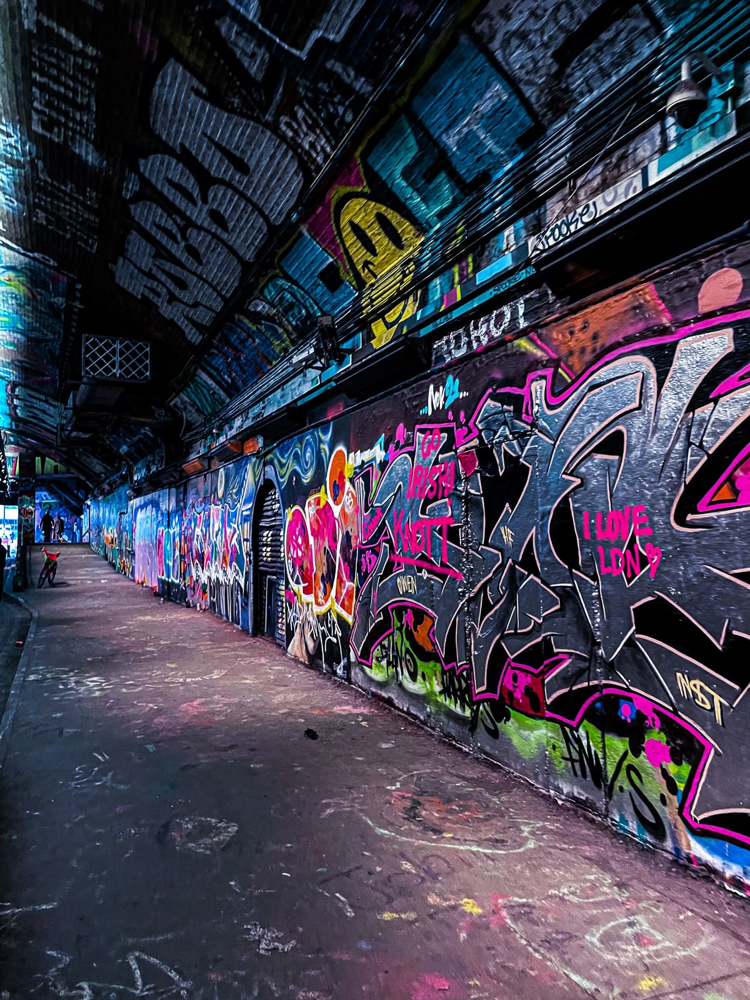
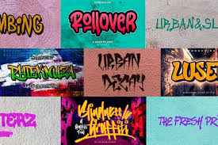
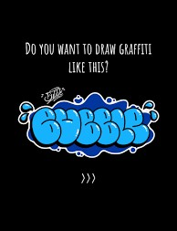
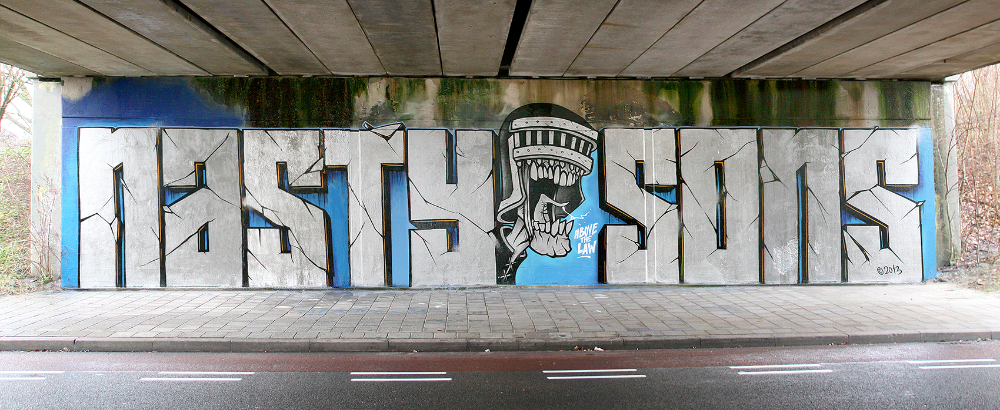
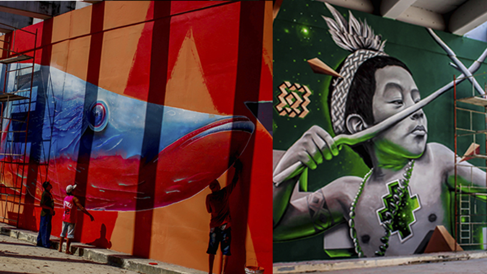
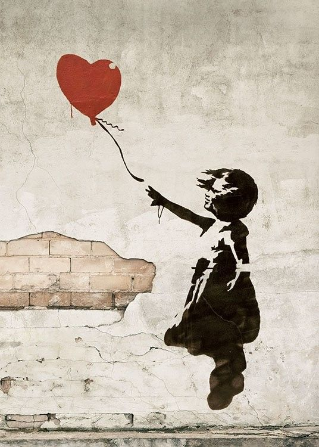
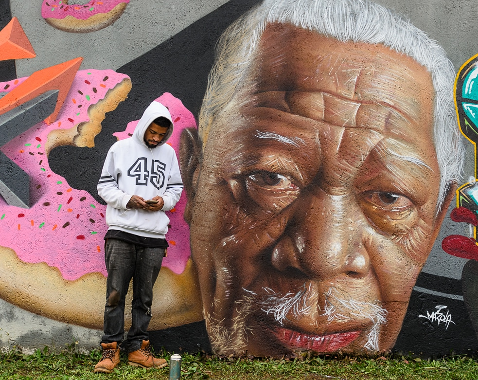
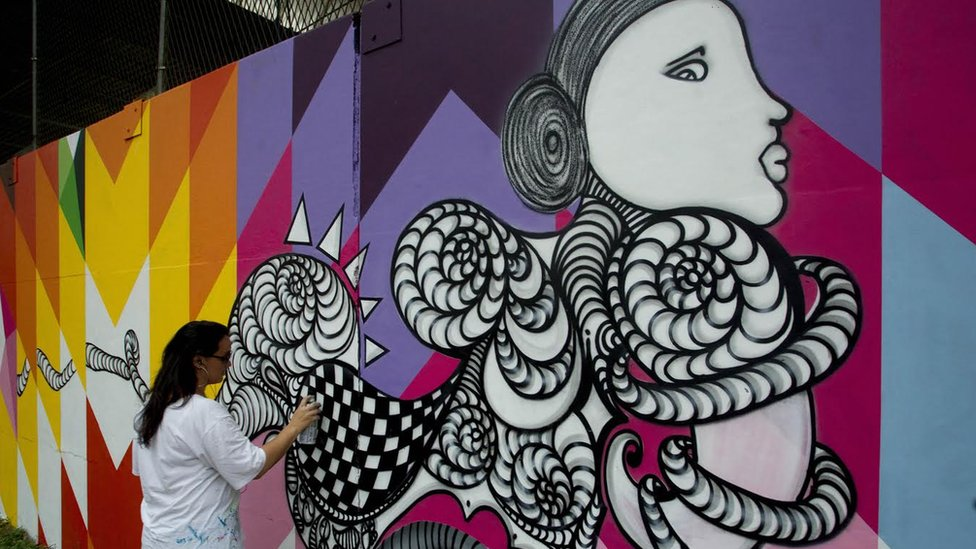
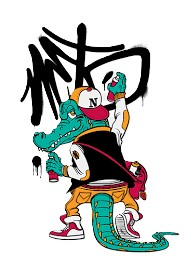
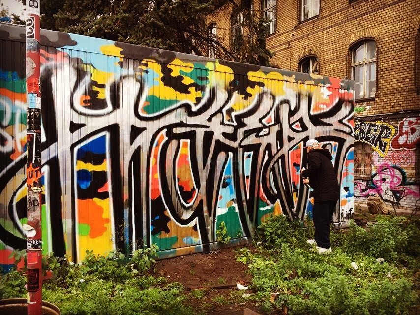

Graffit
A arte visual que transforma a cidade em uma galeria a céu aberto
A história do grafite remonta às expressões humanas de marcação em paredes desde o Império Romano, evoluindo para a arte urbana contemporânea nas décadas de 1960 e 1970 em Nova Iorque, como forma de expressão e protesto social associada ao movimento Hip Hop. No Brasil, influenciado pela cultura americana, o grafite ganhou força em São Paulo a partir do final dos anos 70, transformando-se em uma forma de arte reconhecida, embora a prática ainda seja vista como vandalismo quando feita sem autorização.
Origens e Influências
Antiguidade
As primeiras formas de grafite foram inscrições e pinturas em muros, como as encontradas no Império Romano.
Movimentos Contraculturais
Nos anos 60 e 70, o grafite foi impulsionado por movimentos de contracultura, como os de Paris em 1968, onde jovens usavam os muros para escrever frases de protesto.
Nova Iorque e Hip Hop
A partir da década de 1970, Nova Iorque se tornou o epicentro do grafite, que se desenvolveu como um dos quatro pilares do movimento Hip Hop, dando voz aos jovens das periferias e contando suas histórias de vida.
Grafite no Brasil
Os estilos de grafite incluem o 3D Style, com efeitos de profundidade e sombreamento; o Wildstyle, com letras entrelaçadas e complexas; o Throw-up (ou Bomb), para escritas rápidas com formas arredondadas; o Estêncil, usando moldes pré-recortados; e o Realismo, que busca reproduzir imagens com exatidão. Outros estilos incluem o Old School, com cores vibrantes, e o Muralismo, em grande escala.
Estilos de Letras (Tipografia)
3D Style: Usa efeitos de luz, sombra e contorno para criar uma sensação tridimensional nas letras. Wildstyle: Letras complexas, altamente estilizadas e entrelaçadas, muitas vezes difíceis de ler e com muito uso de cor. Throw-up (ou Bomb): Letras rápidas, arredondadas e geralmente coloridas, usadas para preencher espaços com o nome do artista. 
Bubble letters
Letras com formas arredondadas e curvas, semelhantes a bolhas.
Blocbuster/Block Letters
Letras grandes, quadradas, robustas e mais legíveis, geralmente em duas cores.
Estilos Temáticos e Técnicas
Estêncil (Stencil Art)
Tinta é aplicada através de um molde com desenhos ou letras recortadas, permitindo repetição rápida e precisa.
Realismo
Busca reproduzir imagens e retratos com a maior precisão e detalhes possíveis, quase como uma fotografia.
Muralismo
Grandes pinturas que ocupam paredes inteiras ou fachadas de prédios, muitas vezes contando histórias ou transmitindo mensagens.
Personagens
O grafiteiro cria personagens originais ou retratos realistas de pessoas. Abstrato: Explora cores, formas geométricas e texturas sem uma representação figurativa clara, expressando emoções. Estilos Históricos e Regionais
Old School

Estilo tradicional originado nos anos 70, caracterizado por cores vibrantes, letras grossas e influências da cultura hip hop.
Grapicho
Uma expressão brasileira que mistura o grafite com a pichação, sendo mais elaborado e colorido que a pichação